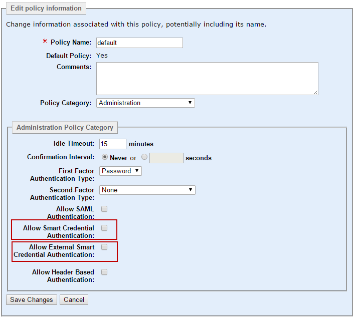

|
IdentityGuard Server 11.0 Administration Guide |
|
IdentityGuard Server 11.0 Administration Guide |
The following procedure describes how to set the required policies for smart credential authentication. It lists the policies required for using smart credentials issued by Entrust IdentityGuard or smart credentials issued by an external certification authority (CA).
To enable policies for smart credential login
1. Log in to the Entrust IdentityGuard Administration interface as the administrator.
 On the
Windows computer where Entrust IdentityGuard is installed
On the
Windows computer where Entrust IdentityGuard is installed
2. Click Policies.
3. From the list of policies, select the one to which you want smart credential login to apply.
4. From the Policy Category list, select Administration.
5. Click Edit Policy.

6. If the smart credentials to be used for login are issued by Entrust IdentityGuard, complete the following steps:
a. Enable the following policies. No further configuration is required.
In the Administration policy category
In the Certificate Authentication policy category
The CA that issued the smart credential must appear in the list of allowed managed CAs.
b. Click Save Changes.
OR
7. If the smart credentials to be used for login are issued by another vendor (not Entrust IdentityGuard), complete the following steps:
a. Import the CA certificates from the unmanaged CA that the issued external smart credential into Entrust IdentityGuard. See .
b. In Entrust IdentityGuard, create a user account with a name that matches the UPN of the external smart credential certificate.
c. For the policy governing this new user account, enable the following policies:
In the Administration policy category:
In the Certificate Authentication policy category:
The CA that issued the external smart credential must appear in the list of allowed unmanaged CAs.
d. Click Save Changes.
Alternative method: The preceding steps describe the policy-supported method introduced in release 11.0 to allow smart credential login with external smart credentials. Previously smart credential login with external smart credentials could be enabled by importing certificates from the external smart credentials and registering them in Entrust IdentityGuard. If you did that previously, you do not need to do any further configuration for this feature. To check whether certificates from external smart credentials are already registered, in the Administration interface, click Certificates, and on the List Unmanaged CA Certificates tab, look for the certificates.